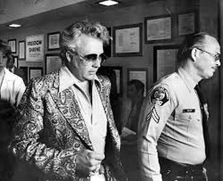

The Team America comic books were based on a toy line by Ideal Toys. The Team America toy line was an attempt by Ideal to replace their successful Evel Knievel toy line after Knievel served six months for battery in the late 1970s, and it used many of the same molds and designs.

Team America, is a fictional superhero motorcycle team appearing in American comic books published by Marvel Comics. They first appeared in Captain America #269 (May 1982) as Team America. They were renamed the Thunderiders in Thing #27.
The mothers of James McDonald, Wolf, Winthrop Roan Jr., Leonard Hebb and Luke Merriweather were exposed to mutagenic agents by the terrorist organization HYDRA as part of an experiment known as Project: New Genesis. HYDRA hoped to create mutant children which could later be trained as super-agents. The project was apparently unsuccessful for all test subjects other than these five.